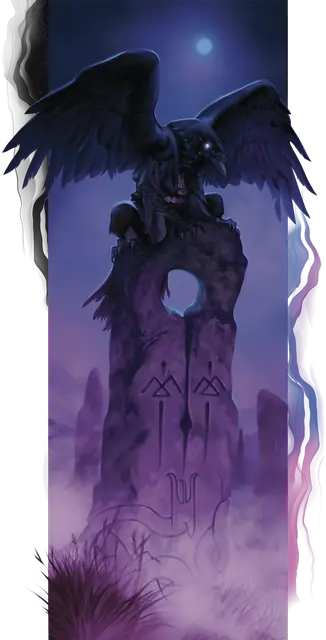

Верворон
Wereraven
Среднее или Маленькое Чудовище (Ликантроп), Нейтральное Доброе

Класс Защиты 12 Инициатива +2 (12)
Хиты 54 (12к8)
Скорость 30 футов, Полёта 50 футов (только в гибридной форме или в форме ворона)
| мод | спас | ||
|---|---|---|---|
| СИЛ | 10 | +0 | +0 |
| ЛОВ | 15 | +2 | +2 |
| ТЕЛ | 11 | +0 | +0 |
| мод | спас | ||
|---|---|---|---|
| ИНТ | 13 | +1 | +1 |
| МДР | 15 | +2 | +2 |
| ХАР | 14 | +2 | +2 |
Чувства пассивное Восприятие 16
Языки Общий плюс ещё один язык
Опасность 2 (450 опыта; БВ +2)
Особенности
Подражание звукам. Верворон может имитировать простые услышанные им звуки, такие как шёпот или щебетание. Слушатель может распознать подделку, успешно пройдя проверку Мудрости (Проницательность) Сл 12.
Действия
Мультиатака. Верворон совершает две атаки Царапанием или Коротким луком в любой комбинации. Он может заменить одну из атак использованием Клевка.
Царапание. Бросок рукопашной атаки: +4, досягаемость 5 фт. Попадание: 7 (2к4 + 2) Рубящего урона.
Короткий лук (только в гуманоидной или гибридной форме). Бросок дальнобойной атаки: +4, дистанция 80/320 фт. Попадание: 9 (2к6 + 2) Колющего урона.
Клевок (только в гибридной форме или в форме ворона). Бросок рукопашной атаки: +4, досягаемость 5 фт. Попадание: 11 (2к8 + 2) Колющего урона. Если цель — Гуманоид, она подвергается следующему эффекту. Спасбросок Телосложения: Сл 10. Провал: Цель проклята. Когда Хиты проклятой цели опускаются до 0, она становится Вервороном под управлением Мастера и получает 10 Хитов. Успех: Цель получает Иммунитет к проклятию этого верворона на 24 часа.
Бонусные действия
Перевоплощение. Верворон либо перевоплощается в гибрид ворона и гуманоида Среднего размера или в ворона Маленького размера, либо возвращается в истинную форму гуманоида. Его параметры, кроме размера, не меняются в зависимости от формы. Любое снаряжение, которое он носит или несёт, не трансформируется.
Бонус мастерства +2
Среда обитания Город, Леса
Сокровища Личные
Верворон
Оборотень — вестник предзнаменований
Вервороны — скрытные, осторожные ликантропы, которые стараются слиться с обществом и исподволь противодействовать злу. Уклоняясь от когтей злых сил, что охотятся на них, и оберегая тех, кто им дорог, они прячут свою истинную природу и редко показывают гибридный облик. И всё же из уст в уста передаются рассказы о жутковатых фигурах с вороньими крыльями, что появляются накануне бедствий, изрекают загадочные пророчества и помогают попавшим в беду. В этих историях есть зерно правды, ведь зло преследует верворонов повсюду, куда бы те ни направились.
Поскольку зло часто ходит стаями, вервороны тоже сбиваются в стаи для борьбы с ним. Они собираются в труднодоступных гнёздах в городской черте или сразу за её пределами — например, на колокольнях, маяках или в кронах древних деревьев. Группы верворонов устроены не очень прочно и жёстко, ведь каждый понимает, как важна анонимность.